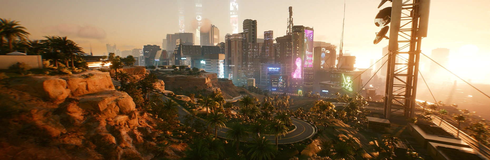

// ARQUIVO 003
BEM-VINDO A NIGHT CITY

Night City é uma metrópole localizada na Califórnia, conhecida por sua desigualdade social, violência, tecnologia avançada e influência das grandes corporações. Apesar disso, no ano de 2077, todos querem ser lendas, e a cidade é o lugar onde os sonhos morrem. A cidade é dividida em diferentes regiões, cada uma com características próprias, e diversas organizações criminosas disputam influência nas ruas da cidade.
A cidade é um dos principais cenários do jogo Cyberpunk 2077, e é onde a história do protagonista V se desenrola. Elaç é dividida em vários distritos, com sua própria história, cultura e desafios. Além de todos os fatores legais que deixam a exploração da cidade mais interessante, é íncrivel se lembrar que a cidade idealizada por Mike Pondsmith foi inspirada em metrópoles reais como São Paulo, Rio de Janeiro, Tóquio, Hong Kong e Los Angeles.
OS DISTRITOS
A cidade é dividida em diferentes regiões, cada uma com características próprias. Entre elas estão Watson, Westbrook, City Center, Heywood, Santo Domingo e Pacifica. Cada distrito conta com suas próprias missões e personagens individuais além da trama principal do jogo, trazendo horas e horas de conteúdo para um jogador explorar.
AS GANGUES
Além das grandes corporações que controlam a cidade, ela é dominada por grupos criminosos que possuem seus próprios objetivos e ambições. Diversas organizações criminosas disputam influência nas ruas da cidade. Entre elas estão os Maelstrom, Garras de Tigre, Valentinos, Animais e os Garotos Vodus. A dinâmica entre poder se aliar a eles ou simplesmente lutar contra eles é uma parte importaçnte na imersão da história do jogo.